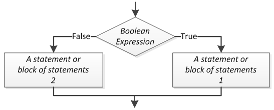

Decision
Selection is the process of taking an action based on a condition.
This decision must resolve to a boolean value, which is
either true or false.
In other words, it must use an boolean expression to make the decision.
Single Alternative
A single alternative decision structure yields control to a process only if some boolean expression is true.

Example Algorithm
Charge Customer for Item - v1
Pseudocode
BEGIN
Begin point of sales transaction
Scan all items
IF customer is a rewards member:
Apply discount
END IF
Complete point of sales transaction
ENDFlowchart
Do in class. Keep for later.
Python `if` Statement
Anything inside the code block (indented at the if’s level) will be evaluated only if the “if” expression evaluates to true.
The expression for the if statement can be arbitrarily complex - the only constraint is that it must evaluate to True or False.
if x:
# do somethingDemo Programs
Check if a number is even. (We will do even or odd in a single program shortly.)
- Order processing logic
Write a program given the following logic:
- Default ship date = 5 days from order date
- If payment not received, ship date = 14 days from order date
- If out of stock, ship date = 30 days from order date
- If rush order, ship date = 1 days from order date
Dual Alternative
A dual alternative decision structure yields control to one of two processes based on the truthfulness of a given boolean condition.

Dual alternative example: Open communication channel with landing aircraft.
-
“Runway is clear?”
- True - Direct aircraft to land.
- False - Send aircraft to hold pattern.
Example Algorithm
Charge Customer for Item - v2
Pseudocode
BEGIN
Begin point of sales transaction
Scan all items
IF customer is a rewards member:
Apply discount
Get payment method
IF payment method is credit card:
Swipe card
ELSE
Take cash
END IF
End point of sales transaction
ENDFlowchart
Do in class.
Python `if, else` Statement
if x:
# do something
else:
# do something elseDemo Programs
Check if a number is even/odd.
Nested Decision Structures
We can put decision structures into the flow of execution from another decision. These are called nested decisions.
BEGIN
IF it is cold outside:
IF it is snowing:
Wear boots
ELSE:
Wear shoes
ELSE:
Wear sandals
ENDExample Algorithm
Charge Customer for Item - v3
Pseudocode
BEGIN
Begin point of sales transaction
Scan all items
IF customer is a rewards member:
Apply discount
Get payment method
IF payment method is credit card:
Swipe card
IF payment is declined:
Deny payment
Shelve items for restocking
ELSE
Take cash
IF change is due:
Give change
END IF
End point of sales transaction
ENDFlowchart
Do in class.
SDEV 140 Only
Fallthrough Decisions
We can chain together arbitrary amounts of decisions to represent “fallback logic” - if, else if, else if, … else.

What happens if we use regular if statements instead of
else if?
What would the pseudocode look like if we did not have
else if, and instead just used a series of
if statements?
Example Algorithm
Charge Customer for Item - v3
Pseudocode
BEGIN
Begin point of sales transaction
Scan all items
IF customer is a rewards member:
Apply discount
Get payment method
IF payment method is credit card:
Swipe card
ELSE IF payment method is cash:
Take cash
ELSE
Deny payment
Shelve items for restocking
END IF
End point of sales transaction
ENDFlowchart
Do in class.
Python `if, elif, else` Statement
if x:
# do something
elif y:
# do something else
else:
# do something elseDemo Programs
- Percent to Grade Program
- Simple calculator